Intro
The ADO is the Air Dilution Olfactometer We will run some tests to make sure that all is ok.
Contents
20/07/2010
There were some problems with bubbling through the ethanol and glass beads. I don't know why, but the signal was very weak. I have found that an odour vial with ethanol at the bottom and no bubbling gives a much better signal. There is also no problem with stuff being sucked up the wrong way. A big bonus. I will try to work without bubbling for now.
Calibration curve (20/07/2010)
First we want to generate a calibration curve: presenting a range of different odour concentrations at the first dilution point. We will just record the signal coming out of the manifolds. The data are generated using calibrationCurve and saved as calib_20100720. Everything has 5 ml of ethanol.
load calib_20100720
plotCalibrationCurve(calib)
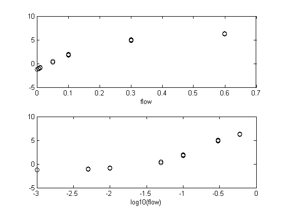 It looks like a flow rate of 0.005 (5 ml) is coming through just fine.
Repeatability (21/07/2010)
Now we want to set up 12 ethanol vials and present odour from each. Do we see the same response from each vial? We will pick up the signals straight out of the in-line manifolds without going through the final valve at all. We run the first tests at 0.333 odour flow. We're presenting the odours in a randomised order.
The raw data look as follows
load params_100721_120901.mat
plotResponseStability(params,1)
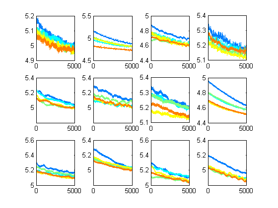 But we want to look at the means
clf plotResponseStability(params)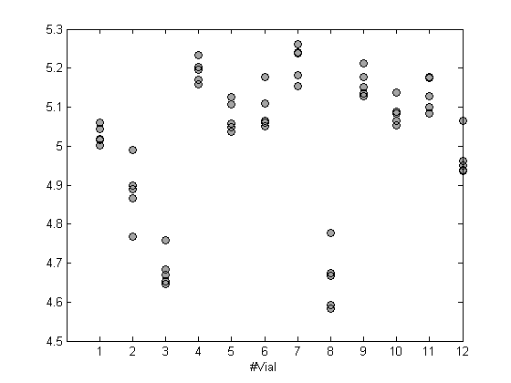
Vials 8 and 3 are rather different from each other. It turned out that Vial 8 had the needles connected the wrong way around (green fat needle at input) and that Vial 3 had a suspect septum.
Fix the above and repeat. Now it looks good:
load params_100721_123921
plotResponseStability(params)
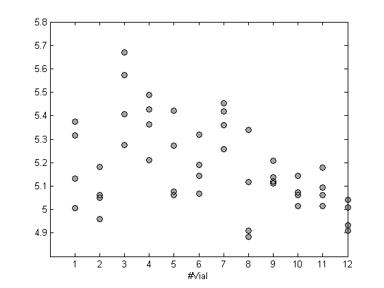 Now do 0.166 odour so that we can show how small the differences between vials really are. This is only a halving of odour concentration. Generally we would change concentration by a factor of 10.
load params_100721_130233 hold on plotResponseStability(params,0,{'or','markerfacecolor',[1,0.5,0.5]}) hold off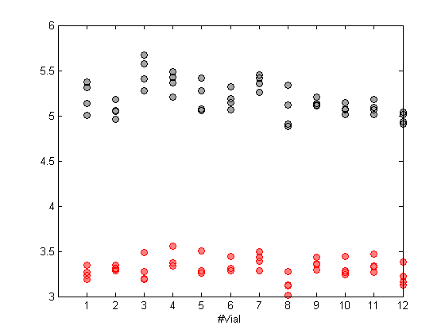
So the differences between vials really aren't very important.
Within-vial stability
Vial 1, below, has air being bubbled through the ethanol
load params_100721_144658.mat
plotResponseStability(params,1)
makeAxesEqual
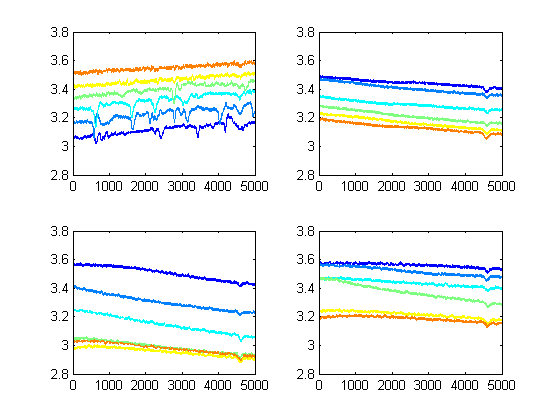 Not really what we hoped for. Vial 1 goes up in concentration during and between presentations. The others all go down. They all vary
Now we set up vial 1 to bubbles through the liquid. Vial 2 had beads. Vials 3 and 4 are only 5 ml of ethanol and no bubbling.
load params_100721_145600.mat
plotResponseStability(params,1)
makeAxesEqual
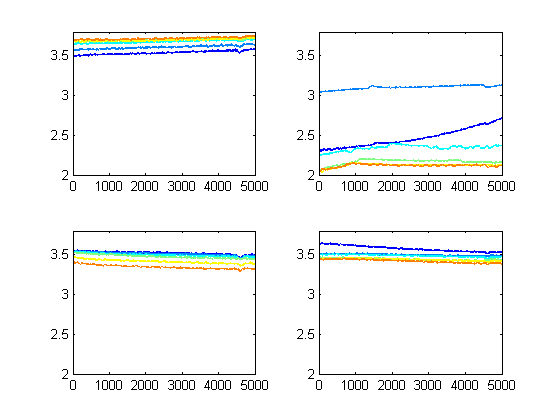 The beads don't help!
Try a lower flow
%initialiseFlows(AC,0.05); load params_100721_150235.mat plotResponseStability(params,1) c=get(gcf,'children');makeAxesEqual(c(2:3))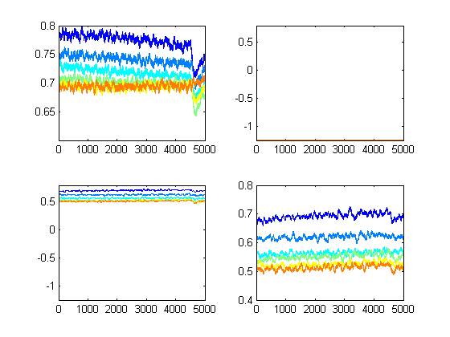
Nothing gets through the breads (note that axes are different). Note that the change in concentration of the ethanol is reversed.
Ethanol has a high vapour pressure. Let's try something different. We stick 1 ml of pentyl acetate in vial 4 and remove the bead vial. Run 6 reps of these three vials. Still at 50 ml/min.
load params_100721_153626.mat
plotResponseStability(params,1)
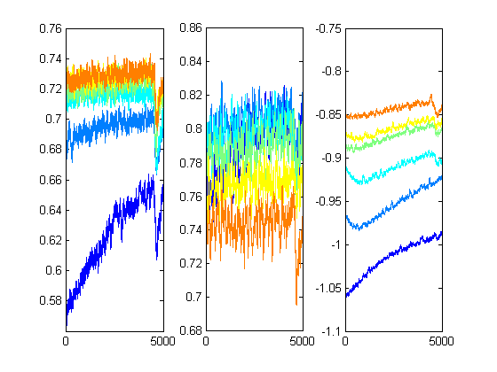 Do it again.
load params_100721_154138.mat plotResponseStability(params,1) c=get(gcf,'children');makeAxesEqual(c(2:3))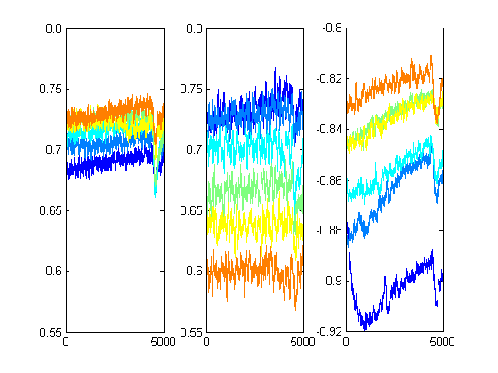
This isn't so bad, really. Because we're actually going to be going from basline signal with the PID, these responses, especially the first one were we're bubbling. Will actually look rather good.
22/07/2010
Let's repeat the last thing we presented yesterday. We have waited over night, let's see how it looks. Again, the PID gain is at 5. Vial 1 is bubbling 5ml of pure ethanol, we're skipping the beads in 2, 3 has 5 ml of ethanol but we're not bubbling, 4 has 1 ml of pentyl acetetate.
%initialiseFlows(AC,0.05); %PID=deliverOdoursNew(AC,par,1); load params_100722_104253 plotResponseStability(params,1) c=get(gcf,'children');makeAxesEqual(c(2:3))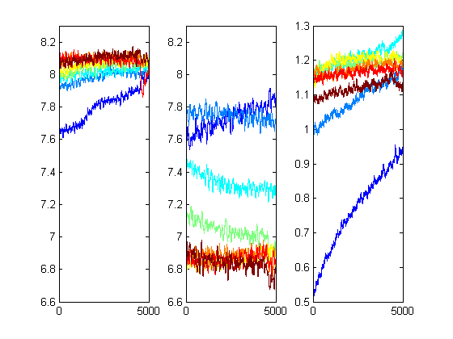
Then
%initialiseFlows(AC,0.166); %PID=deliverOdoursNew(AC,par,1); % that clips at gain=5, so I have decreased gain to x1 load params_100722_104722 plotResponseStability(params,1) c=get(gcf,'children');makeAxesEqual(c(2:3))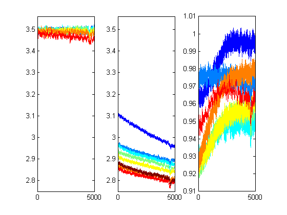
Let's run it again:
load params_100722_105440 plotResponseStability(params,1) c=get(gcf,'children');makeAxesEqual(c(2:3)) % It has to be said that bubbling produces the most consistent % results. That's a pity because it's potentially dangerous...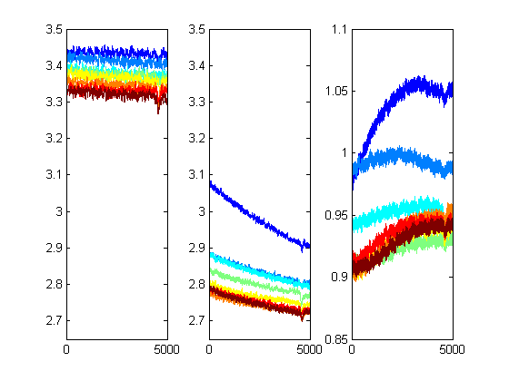